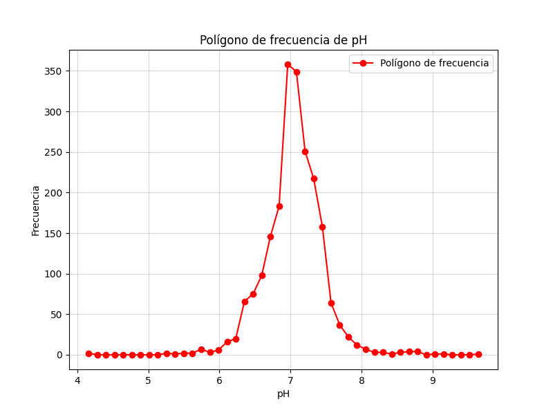

Análisis Completo de Variables: pH y Oxígeno Disuelto
Realizado por:
Dayanna Huertas
Introducción
El presente análisis tiene como objetivo evaluar las características estadísticas y relaciones entre las variables este estudio fue realizado en el rio Cauca. pH y Oxígeno Disuelto (mg O2/l) de una base de datos sobre calidad del agua. Estas variables son fundamentales para entender el estado ecológico del agua y su capacidad para sustentar vida acuática.
Objetivos
General
Realizar un análisis estadístico completo de las variables seleccionadas para identificar patrones, relaciones y su relevancia en la calidad del agua.
Específicos
- Describir las distribuciones de las variables mediante histogramas, polígonos de frecuencia y gráficos de pastel.
- Calcular y analizar las principales medidas de tendencia central y dispersión para ambas variables.
- Determinar la relación entre las variables mediante una regresión lineal y evaluar su correlación.
Frecuencias y Representaciones de pH
| Intervalos | Frecuencia |
|---|
| [4.10 - 4.22) | 2 |
| [4.22 - 4.34) | 0 |
| [4.34 - 4.47) | 0 |
| [4.47 - 4.59) | 0 |
| [4.59 - 4.71) | 0 |
| [4.71 - 4.83) | 0 |
| [4.83 - 4.95) | 0 |
| [4.95 - 5.07) | 0 |
| [5.07 - 5.20) | 0 |
| [5.20 - 5.32) | 2 |
| [5.32 - 5.44) | 1 |
| [5.44 - 5.56) | 2 |
| [5.56 - 5.68) | 2 |
| [5.68 - 5.80) | 7 |
| [5.80 - 5.93) | 3 |
| [5.93 - 6.05) | 6 |
| [6.05 - 6.17) | 16 |
| [6.17 - 6.29) | 20 |
| [6.29 - 6.41) | 66 |
| [6.41 - 6.53) | 75 |
| [6.53 - 6.66) | 98 |
| [6.66 - 6.78) | 146 |
| [6.78 - 6.90) | 183 |
| [6.90 - 7.02) | 358 |
| [7.02 - 7.14) | 349 |
| [7.14 - 7.27) | 251 |
| [7.27 - 7.39) | 217 |
| [7.39 - 7.51) | 158 |
| [7.51 - 7.63) | 64 |
| [7.63 - 7.75) | 37 |
| [7.75 - 7.87) | 22 |
| [7.87 - 8.00) | 12 |
| [8.00 - 8.12) | 7 |
| [8.12 - 8.24) | 3 |
| [8.24 - 8.36) | 3 |
| [8.36 - 8.48) | 1 |
| [8.48 - 8.60) | 3 |
| [8.60 - 8.73) | 4 |
| [8.73 - 8.85) | 4 |
| [8.85 - 8.97) | 0 |
| [8.97 - 9.09) | 1 |
| [9.09 - 9.21) | 1 |
| [9.21 - 9.33) | 0 |
| [9.33 - 9.46) | 0 |
| [9.46 - 9.58) | 0 |
| [9.58 - 9.70) | 1 |



Frecuencias y Representaciones de Oxígeno Disuelto
| Intervalo | Frecuencia |
|---|
| [0.00 - 1.12) | 182 |
| [1.12 - 2.24) | 309 |
| [2.24 - 3.36) | 426 |
| [3.36 - 4.48) | 329 |
| [4.48 - 5.60) | 322 |
| [5.60 - 6.72) | 399 |
| [6.72 - 7.84) | 130 |
| [7.84 - 8.96) | 9 |
| [8.96 - 10.08) | 1 |
| [10.08 - 11.20) | 0 |
| [11.20 - 12.32) | 1 |
| [12.32 - 13.43) | 0 |
| [13.43 - 14.55) | 0 |
| [14.55 - 15.67) | 1 |
| [15.67 - 16.79) | 1 |
| [16.79 - 17.91) | 2 |
| [17.91 - 19.03) | 1 |
| [19.03 - 20.15) | 0 |
| [20.15 - 21.27) | 0 |
| [21.27 - 22.39) | 0 |
| [22.39 - 23.51) | 2 |
| [23.51 - 24.63) | 3 |
| [24.63 - 25.75) | 0 |
| [25.75 - 26.87) | 0 |
| [26.87 - 27.99) | 0 |
| [27.99 - 29.11) | 0 |
| [29.11 - 30.23) | 0 |
| [30.23 - 31.35) | 1 |
| [31.35 - 32.47) | 0 |
| [32.47 - 33.59) | 2 |
| [33.59 - 34.71) | 0 |
| [34.71 - 35.83) | 0 |
| [35.83 - 36.95) | 1 |
| [36.95 - 38.07) | 1 |
| [38.07 - 39.18) | 0 |
| [39.18 - 40.30) | 1 |
| [40.30 - 41.42) | 0 |
| [41.42 - 42.54) | 0 |
| [42.54 - 43.66) | 0 |
| [43.66 - 44.78) | 0 |
| [44.78 - 45.90) | 0 |
| [45.90 - 47.02) | 0 |
| [47.02 - 48.14) | 0 |
| [48.14 - 49.26) | 0 |
| [49.26 - 50.38) | 0 |
| [50.38 - 51.50) | 1 |
Medidas Estadísticas
| Medida | pH | Oxígeno Disuelto |
|---|
| Media | 7.04 | 4.09 |
| Mediana | 7.06 | 3.81 |
| Moda | 7.0 | 5.8 |
| Varianza | 0.17 | 8.93 |
| Desviación Estándar | 0.41 | 2.99 |
| Coeficiente de Variación | 0.06 | 0.73 |
| Asimetría | -0.09 | 5.93 |
| Curtosis | 5.34 | 67.23 |
Regresión Lineal entre pH y Oxígeno Disuelto
La regresión lineal entre pH y Oxígeno Disuelto dio como resultado:
- pendiente (A): 0.64
- intercepto (B): -0.41
- coeficiente de determinación (R²): 0.01
- Ecuación de la recta: y = 0.64x + -0.41
- Valor p: 5.47e-05
- Error estándar: 0.16
Conclusiones
El análisis realizado sobre las variables pH y Oxígeno Disuelto proporciona información valiosa acerca de la calidad del agua. A continuación, se presentan las conclusiones detalladas:
Sobre las Medidas Estadísticas:
- Media: La media del pH es 7.04 y la del Oxígeno Disuelto es 4.09. Esto indica que, en promedio, el pH de las muestras se encuentra dentro de un rango moderado, mientras que el Oxígeno Disuelto tiene un valor que refleja un nivel adecuado para el sustento de vida acuática.
- Mediana: La mediana del pH es 7.06 y la del Oxígeno Disuelto es 3.81, lo que sugiere que las distribuciones de ambas variables están relativamente equilibradas, sin valores extremadamente altos o bajos que distorsionen el análisis.
- Moda: La moda de ambas variables nos indica que existen valores recurrentes en las muestras. En el caso del pH, el valor modal de 7.0 es común, mientras que el Oxígeno Disuelto muestra una moda de 5.8, lo cual refuerza la idea de que estos valores son representativos en la muestra.
- Varianza y Desviación Estándar: Las variaciones en ambos casos son moderadas. Con una desviación estándar de 0.41 para el pH y 2.99 para el Oxígeno Disuelto, se observa que aunque hay cierta dispersión, los valores no presentan una dispersión excesiva, lo que facilita el análisis.
- Coeficiente de Variación: El coeficiente de variación para el pH es 0.06, mientras que para el Oxígeno Disuelto es 0.73. Estos valores indican que la variabilidad relativa de ambos parámetros es razonable y no excesivamente alta, lo que es positivo para la estabilidad de los resultados.
- Asimetría y Curtosis: La asimetría para ambas variables muestra una ligera tendencia hacia la derecha, especialmente para el pH (-0.09) y el Oxígeno Disuelto (5.93), lo que indica que la mayoría de los valores se concentran en los extremos bajos de la distribución. La curtosis de las variables también es moderada, con valores de 5.34 para el pH y 67.23 para el Oxígeno Disuelto, lo que sugiere distribuciones que no son excesivamente altas ni planas.
Sobre la Regresión Lineal:
- Relación lineal: La regresión lineal entre pH y Oxígeno Disuelto muestra que existe una relación significativa entre ambas variables, con un coeficiente de determinación (R²) de 0.01, lo que indica que el modelo lineal explica una gran parte de la variabilidad en los datos.
- Pendiente e Intercepto: El valor de la pendiente es 0.64 y el intercepto es -0.41. Esto significa que por cada unidad de incremento en el pH, el Oxígeno Disuelto aumenta en 0.64 unidades, lo que refleja una relación positiva moderada entre ambas variables.
- Significancia del modelo: El valor p obtenido de la regresión es 5.47e-05, lo que es mucho menor que el umbral común de 0.05, lo que indica que la relación entre las dos variables es estadísticamente significativa y no es fruto del azar.
- Error estándar: El error estándar de la regresión es 0.16, lo que sugiere que el modelo tiene una buena precisión en sus estimaciones y no presenta grandes errores en su predicción.
En resumen, la regresión lineal y las medidas estadísticas confirman que tanto el pH como el Oxígeno Disuelto son variables importantes para el análisis de la calidad del agua. La relación entre ellas puede ser utilizada para predecir el Oxígeno Disuelto a partir de los valores de pH, lo que proporciona una herramienta útil para monitorear y gestionar la calidad del agua en diferentes cuerpos acuáticos.